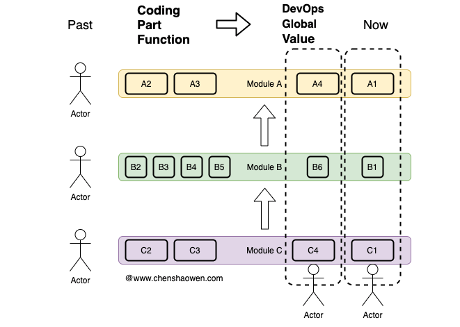

What DevOps Is
There Is No Very Clear Definition
Concepts that grow quickly always attract various readings and extensions.
Some say DevOps = tools + practices + culture.
DevOps is a set of cultural ideas built around tools and practices, emphasizing empowering teams, cross-team communication, and automation.
Others say DevOps = people + process + products.
DevOps is the combination of people, process, and product, letting a team continuously deliver value to end users. In many cases the goal of development is to ship new features quickly, while the goal of operations is to keep the system available. Through a body of best practices, DevOps aligns those goals — improving stability while speeding up delivery of new features.
Still others say DevOps = culture + practices + tools.
DevOps is the combination of cultural ideas, practices, and tools that quickly raises a team's delivery capability.
All of the descriptions above emphasize culture, and indeed one aspect of DevOps is culture. But culture is too broad a category; what we discuss here is one part of it.
End-to-End Value Delivery
What DevOps emphasizes is not automation, but end-to-end value delivery.
Employees should not focus on a single step alone, but deliver value to the customer.

The traditional way of working is more like a large factory: each person delivers only the step they are responsible for. As in the figure above, if a process has three steps A, B, and C, then three people are each responsible for one. The moment any step goes wrong, the whole delivery is affected.
What DevOps advocates is value-oriented delivery: only when A4, B6, and C4 are all complete and handed to the user does the output mean anything. DevOps therefore cares more about team collaboration and the fast delivery of a complete artifact, and rejects half-finished work.
This faces outward. Continuous delivery can dissolve top-down pressure.
Team Autonomy, Agile Development
End-to-end value delivery demands greater autonomy.
This means adjusting architecture and organization, empowering employees, and encouraging small, complete teams. Amazon's Two Pizza Team makes the point that a team should be small enough to be fed by two pizzas — roughly a dozen people.
An autonomous team can control day-to-day execution, but it still needs to align with the organization's larger goals, or the effort is wasted.
Platform Tooling
Platform tooling is not the core of DevOps, but it is indispensable.
The product requirements, R&D processes, and production environments we face are complex. Software engineering remains one of the most challenging engineering disciplines humanity faces.
With platform tooling we can reduce mistakes and raise efficiency.